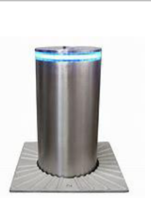
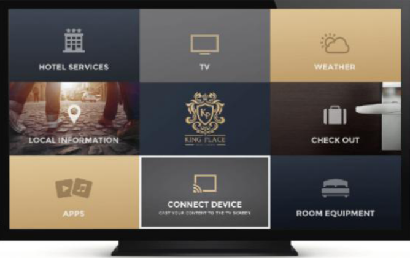

Tech Warehouse Trading (TWT) Company is an energetic young company built by well experienced and strong management committed in consultancy, implementation and support of Security System Solution (Surveillance System, Access Control System, Data Center solution, Large Scale Enterprise Data & Telecom Network mainly in Hospitality Industry,Manufacturing, Production, Education and Healthcare. TWT is sister company of ZBA Importer PLC which is a well experienced company participating in IT Industry for supplying and installation.TWT employs qualified and innovative individuals who have the necessary skills and years of experience to respond to today's, challenging IT needs. Exceeding client satisfaction motivates TWT team of staff. Experience and expertise IS a very powerful combination. Our experience in understanding clients‟ requirements, coupled with our technical expertise has enabled us to provide IT solutions to many satisfied customers. The fact that TWT provides Turnkey solutions and has the capacity to deliver all the required products and services; makes us unique in providing you the desired results.
Our clients can have the comfort in being serviced by a professional company that has over the years demonstrated successful installations, some of which have been very complex.Established in Ethiopia in 2017 and incorporated with ZBA importer in the same year which has 5 years of experience in import, supply and integration of IT Systems. And we are also working with SAMSUNG, IKUSI, SALTO, Orbita, Dahua, Fire integrated and Security LTD on Interactive TV, Access System and Security Solutions such as CCTV, fire Alarm, Fire Suppression Systems, Building Automation and maintenance service projects.
The company upholds the following values as a guideline to its operation and business transactions:Commitment
Customer Value
To help Customers build a reliable, secure, manageable and flexible IT Infrastructure that establishes a foundation for Clients to meet their business objectives.
To progress into a leading IT and Telecommunication Systems Integrator in The Middle East &Africa, supporting progressive organizations in the region and consolidates our regional leadership.
Continue improving our ability in Consult, Design, Implement, Install, After Sale Support & Customer Care to enhance our customer‟s experience and satisfaction to make it a joyful and fruitful experience.
Empowering our ability to reach even far markets to the whole Africa by partnering with reliable partners across the world to ensure our services are globally served in a high-quality standard all over the markets.
Objectives
Our objectives are to assist clients with various implementations of their projects, and we have confidence in our
ability to generate the consensus and commitments necessary to succeed. We are prepared to stand behind our
recommendations and to assist our clients with obtaining appropriate approvals to proceed.
Our Expertise
Tech Warehouse Trading: Security Solutions is a full-service systems integrator specializing in Access
Control, Life Safety, Fire Alarm, CCTV, Mass Notification Systems, Commercial Doors, Locksmith Services, Alarm
Monitoring and Security Gates. We design, install and maintain customized security systems that integrate physical
security devices, electronic technology, and information (IT) systems with operational systems such as building
automation and human resources. This convergent approach streamlines management and increases capabilities. As an
independent systems integrator, we remain vendor-neutral and clearly focused on providing the right solution for each
client, whether they need a complete turnkey solution, technical services or consulting services. Let us help safeguard
your personal and profession assets with the latest and most reliable security solutions technologies available. You
need a company that can make quick decisions and has a can-do attitude. When it comes to minimizing your company‟s risk
and maximizing your budget, Tehc Warehouse Trading Solutions will provide the exceptional service and reliability you
deserve. Your company needs a “trusted advisor” that can recommend the latest in solutions and technologies.
SECURITY SOLUTIONS INTEGRATION
Large Scale Surveillance System solutions Our company consults, design, install, test and
commission that can range in size from being within a single building, to a complex of buildings, to large campuses and
city centers. Such monitoring of areas and/or activities may be used for security, safety, industrial, or private
purposes. The visual images created by a CCTV system may be viewed while an event is happening or recorded for
„after-the-fact‟ review either on-site or off-site. Review is done via different applicable platform. Such reviews of
prerecorded visual information may also be done „remotely‟ through the use of telephone lines, fiber optics, microwave,
the internet, and/or a host of other such transmission methods according to the design and complexity of the CCTV
system.
Intrusion Detection and Perimeter Security
Perimeter Protection Systems, We are a team of dedicated perimeter security consultants and engineers passionate about delivering tailor-made total perimeter security solutions to most security-sensitive assets. We specialize in the design, supply, project management and integration of perimeter security solutions from conception to handover. From high-security fencing systems and RPG pre-detonation screens to wireless detection and communication to remote locations, WTW continues to expand its integrated systems and services globally.
Fiber Intrusion detection system
An integrated portfolio of products and services
We believe that each perimeter solution should be uniquely designed depending on the level of protection needed, risk exposure, resources and existing
infrastructure, to name just a few factors we take into account. Our services offered:
Risk assessments
Design &engineering
Perimeter security consulting
Project management & installation
System integration
Training, maintenance and support
Rapid deployment, surface-mounted barriers
Installing crash-rated fences & barriers
High-security fencing systems
Crash-rated wedges & bollards
Monitoring and control of perimeter security systems

Access Control System
Organizations today face a myriad of security challenges at their facilities. Managing the access of authorized personnel into a
facility is a major concern. The primary challenge for many organizations is to secure their facility from unwanted
personnel while also allowing a free flow of people who have a legitimate purpose in engaging with the organization. DSS
Security installs all types of access control systems, from the simplest to the most complex. Access control restricts
entry into an area by means of electric locks and various entry techniques.
Installation of Different Access Control Systems
Electric Locks Installation for Hotels, Factories and Business and Private Sector
Electromagnetic locks are rectangular and have two basic parts: the electromagnet and the armature. By code, all
electromagnetic locks installed are fail-safe (unlocked upon power loss).
Electric Strikes
Electric strikes are installed in the strike plate side of the doorjamb can be either fail-safe (unlocked upon power
loss) or fail-secure (locked upon power loss), depending upon the application.If code requires that the lock installed
be connected to the fire alarm system, the lock must be fail-safe.
Because electric strikes do not provide latching of the door upon power loss, they are not allowed by code for
installation in stairwells.
Electrified Locksets
Electrified locksets are locksets that have been modified so that the handle uses power to enable an authorized person
to enter the protected space. It is used in conjunction with an electrified hinge for power transfer.
Push Bars Installation
Biometric Authentication
Biometric solutions for sensitive areas requiring a higher degree of authentication.
Access Control Software
Access Control Software allows for input of cardholder information, times of access, door schedules, etc. all by means
of the software. This system also maintains an audit trail of entry by personnel. Entry is gained through use of
proximity card, keypad, and/or biometric readers.
Attendance System
A unique and most comprehensive solution combining both advanced hardware and software. Fingerprint, RF Card and Face
recognition technology. Multi user, Multi site. Support for different shifts (Straight, Night, Plan, Contractor, Ramadan
& Multi-shifts, daily, weekly Contractor, Ramadan & Multi-shifts, daily, weekly .Email and export options. Customized
authorization levels. Public holiday & holiday bonus. Built-in standard, graphical reports & Performance Charts. Export
to PDF, excel, & text files. Violation, overtime, unpaid time, business leave, sick leave etc. Can be integrated with
any HR or ERP systems .
Access Control Services
WTW installs access control systems as well as provides ongoing service as needed and contact us for installation or
service of your system.
Large Scale Data Network and Telecom Infrastructure installation and Deployment
TWT comprehensive range of engineered design and installation solutions
Structured Cabling: Cat 6, 6A & 7 copper
Fiber optic networks: Outside Plant (OSP) construction, certification and commissioning Fiber optic splicing, Single mode and multimode installation.
Design and construction
Design, procurement and installation of fiber optic and structured cabling networks
Design, procurement and installation of routed and switched networks
Design, procurement and installation of server and storage hardware
Data Centre Construction: Data cabinet, server cabinet and secure cabinet installations
Communication solutions Mobile tower cable installations Coax cable grounding Transient overvoltage protection Wireless LAN installation and commissioning
Testing services Fiber optic connector scope test and certification Polarization mode dispersion (PSD) measurement Return loss and insertion loss measurement OTDR test and certification - long haul OSP
INTERACTIVE TV SYSTEM (HOSPITALITY TV)

automatic tv on/off on guest check-in/checkk-outt
welcome message
hotel information page
auto posting tv services from the IPTV system to the PMS system
hotel bill view
express check out
message from reception
room status change via TV(direct/clean) for the house keeping service
siplifay hospitality display content management solution for an elevated guest experiance
partian skilled matrix
Organization Team
Profile Overview
Henok woldemichael General manager
Design and implementation using CISCO, MS-Windows serer 2008,maintaining Opera ERP System, Installation and managing
Door Lock system, installation and implementing analog and IP based CCTV Systems, Installation and Configuration of IPBX
system, installation and implementation of Professional Sound system, CCNA Certified, Management and Leadership
Certified. Factories, Hotels, Apartments and Real Estate Solutions Advisor.
Alemayehu Addisu Technical Manager
Experience on LAN/WAN design and implementation using, Cisco, MS-Windows serer 2008, WindowsNT-2003, Exchange2000-2003,
ISA2000-2004, Fibre optics, HP & Dell servers, PABX systems, CCTV Installation and configuration, Door Lock system
installation and management, Fleet management solutions (CCNA Trained, MCSE Trained)
Yitayal Getnet Communication and Marketing Advisory
Certified on Audio & Visual Technologies and IT.
Frehiwot Abebe Marketing and Sales Manager
Certified and Experienced in Hotel & Management and has experience more than 8 years.
Certified in and Experienced in Customer Management and leadership
Event organization
Elias Masresha Senior System Engineer
Experience on LAN/WAN design, implementation, Installation and configuration, MS-Windows serer 2008 configuration, PIX
Firewall, IPBAX Installation and Configuration, Dish Installation and configuration, CCTV Installation and
configuration, Door Lock system installation and management, and CCNA Trained
Amanuel Demissie Network Engineer
Experience on LAN/WAN Installation and configuration, IPBAX Installation and Configuration and CCNA Trained CCNA Trained
Esayas
More than 8 years of experience on cabling of LAN, cabinet mounting, crimping, structure
PARTIAL SKILLED MATRIX
TWT Company Profile
17
Network and Electrical Engineer
cabling, cable organizing, testing, AC installation. (Electrical Engineer)
Daniel Wondimu Consultant
Experience on LAN/WAN design and implementation using, Cisco, MS-Windows serer 2008, WindowsNT-2003, Exchange2000-2003,
ISA2000-2004, Fibre optics, PIX Firewall, HP & Dell servers, PABX systems, software solutions based on .net, Fleet
management solutions (electrical Engineer)
TWT Company Profile
18
Company Name Tech Warehouse Trading PLC Office: Kazanchis Genet Bld. (Next to Zemen Bank) Floor 3rd Office No: 307
Telephone
+251-913-387230 +251-989-993373 +251-915-558430 Email Techwarehouset@gmail.com
P.O.BOX
25866/1000
TECH WAREHOUSE TRADING ADDRESS
TWT Company Profile
19
sNo Contracts Description 1 East Africa Tiger Brand Industry (Industry Zone) Consult, Design, supply, Installation and
commissioning of Advanced Centralized IPCCTV system on 205282 m2 area and 2327 m Perimeter which consists more than 12
factories.
2
Haden Trading G+8 Building Hotel Project (ongoing )
Consult, Design, supply, Installation and commissioning of Advanced Centralized IPCCTV, PABX Telephone System, Unified
Data Centre, Structural LAN, Evac system, MATV System, RF Door Lock System, Wi-Fi 3 Magnolia Hotel Installation and
Configuration of RFID Door Lock System, Installation of Interactive IPTV System
4
Ramsea Shoe Factory
SLA agreement on IT Infrastructure Consult and Support:
Supply of ICT equipments
Wired and Wireless Network System.
Access Control System
Financial System
HR management system 5 Diajeo Beer Company Head Office CCTV System Project
6
Grand Jemo Hotel Note: Ongoing project
Contract of Installation of Data Network, Manageable Door Lock System, Sound System, CCTV, PA system and Voice and
Telephony System. 7 JoyTech Farm IP CCTV installation, Testing and Commissioning
8
Entoto Artisian
SLA: IT System Support, Consult and supply 9 Whizkids Workshop PLC SLA Agreement on Video Production System Management
System. Data Ware house and Backup System Management
10
Ethiopian Public Health Association (EPHA)
Enterprise LAN for 200 Client and IPABX Telephone system 78 Extensions 11 Gift Water Factory Note: Ongoing project Data
Network and CCTV
12
Damot Hotel
CCCTV, Telephone 13 Damot PP Factory CCTV System
14
Beement Agency
CCTV System and Data Network 15 Daky Kids Warehouse CCTV System
16
Radisson Blu Hotel Addis Ababa
CCTV System Expansion 17 Feljas and Masson Hydroelectric Plant Engineering CCTV and Data Network Installation and
support
CLIENTS
TWT Company Profile
20
LIST OF PARTNERS WE WORK WITH
TWT Company Profile
21
END OF COMPANY PROFILE